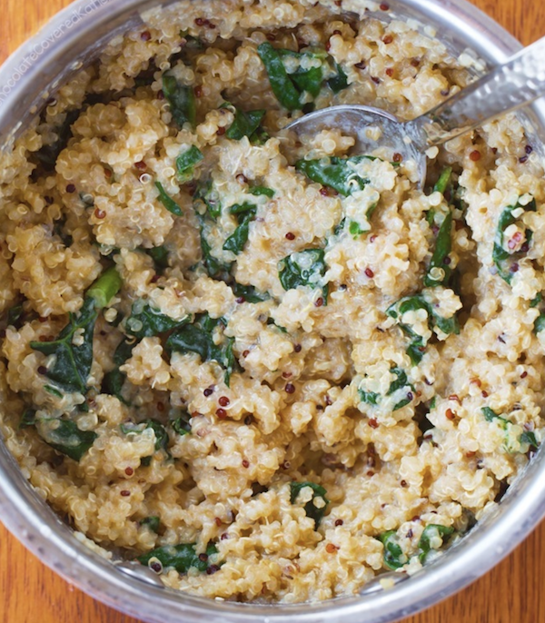

Creamy Quinoa

Description
This creamy quinoa dish is a wholesome, plant-based comfort food made with fluffy quinoa and enriched with nutritional yeast for a savory, cheesy flavor. It’s a satisfying and nutritious meal that’s both dairy-free and packed with protein, perfect as a main or hearty side.
Ingredients
- 1 1/4 cup water
- 1/2 cup raw quinoa
- 3 T nutritional yeast or parmesan
- 1/2 t salt
- 1/4 t garlic powder
- 1/4 t onion powder
- 2 T vegan butter
- 1 cup chopped kale or spinach
- 1/2 cup almond milk
Directions
- Combine all ingredients (except for the greens).
- Bring to a boil an then simmer for about 20 minutes or until all liquid has cooked down.
- Add greens and then cook for another minute.
- Enjoy!
Home